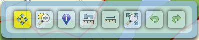
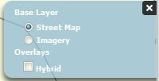
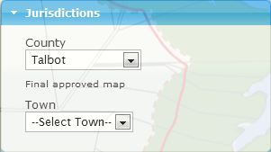
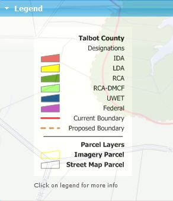
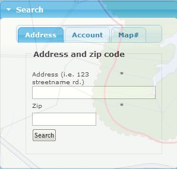
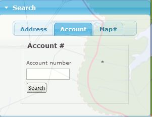
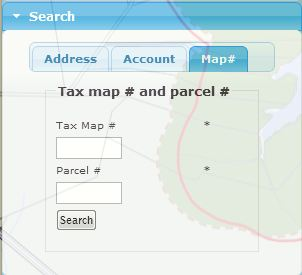
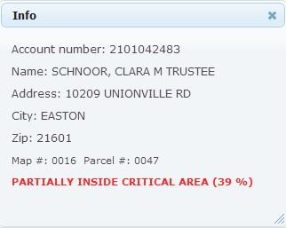

Using Tools
-
Tool bar  Tool bar includes navigation tools, info tool, previous and next extent, full extent. Note that map navigation such as zooming and panning can be also performed using the mouse as described above.
Zoom Box
 Zoom-Box allows zooming by drawing a box on the map. Click and drag the mouse
with left button on the zoom area. Zoom-Box only supports zoom-in operation.
Zoom-Box allows zooming by drawing a box on the map. Click and drag the mouse
with left button on the zoom area. Zoom-Box only supports zoom-in operation.
Info
 Info tool selects a parcel at a point location. It also provides critical area
status information of the selected parcel. After selecting the tool, click on the
map to query parcel information at a point location. In addition, this tool is used
to identify parcels in some specific area of the map when other searching operations
fail to find the parcel.
Info tool selects a parcel at a point location. It also provides critical area
status information of the selected parcel. After selecting the tool, click on the
map to query parcel information at a point location. In addition, this tool is used
to identify parcels in some specific area of the map when other searching operations
fail to find the parcel.
Measuring tools

 Polygon/polyline measuring tools help estimate area of a parcel or distance of
the parcel to critical area. Activate the tool and draw polygon/polyline on the
map to start measuring. Double click to deactivate the tools.
Polygon/polyline measuring tools help estimate area of a parcel or distance of
the parcel to critical area. Activate the tool and draw polygon/polyline on the
map to start measuring. Double click to deactivate the tools.
Pan
 Pan tool is simply for map navigation. Click and drag the mouse on the map to
pan.
Pan tool is simply for map navigation. Click and drag the mouse on the map to
pan.
Extent history

 Extent history is used to navigate the map to previous map extents. Next extent
is only activated when previous extent is clicked, and previous extent is activated
once the map has been navigated at least once.
Extent history is used to navigate the map to previous map extents. Next extent
is only activated when previous extent is clicked, and previous extent is activated
once the map has been navigated at least once.
Full extent
 Full extent is a one click tool. The map is zoomed to the maximum extent. This tool does not alter the current
active tool.
Full extent is a one click tool. The map is zoomed to the maximum extent. This tool does not alter the current
active tool.
-
Layer switcher  Street map, hybrid and imagery layers can be switched on base map dynamically using this switcher. It can also be switched on or off.
-
Jurisdictions  This box allows user to select a county of interest. When selecting a county, the map automatically zooms to the county and loads its critical area and parcel layer. Once selected, any search function will perform its task within the selected county. Towns will loaded dynamically for the selected county. Selected town will be zoomed in on the map. Note that a county must be selected from this list for the map to perform search function.
-
Legend  Legend is loaded once a county is selected. The legend describes critical area designations, which may vary by county. When county is selected or changed, legend box is reloaded accordingly. Legend description in more details can be viewed by clicking on the legend image.
-
Address Search  Locate by Address tool is used to search for an address of a parcel location in a selected county. Address search is ready to take address and zip code once a county is selected. Trying to search for address before selecting a county will cause a validation error. Once a county is selected, address and zip code can be entered to address and zip code box. Click the “Search” button to start the search. Address and zip code cannot be blank. Zip code must be 5 digit long.
-
Account number search  Similar to address search tool, county must be specified before the tool can be functional. Once county is selected, account number can be entered to the box. Click on the “Search” button to start. Account number must contain 10 to 14 digits to be valid.
-
Map number and parcel number search  This tool allows entering the 4 digit map and parcel numbers. Map number and parcel number are also validated. If the numbers are not digits an error will occur and the search will not be processed. This search method might return multiple parcels. In that case simply click on the interested parcel to view the info.
-
Info Box  This info box reports parcel owners name, address, city, zip code, map number, and parcel number when a parcel is selected as well as the critical area status determination. This information tells user whether his/her property is in critical area, or outside critical area. If a parcel is found inside critical area the info box will report whether the parcel is completely or partially (by percentage) inside. Also, if a parcel is found outside critical area the info box will tell how far that parcel is away from critical area.
-
Email This feature allows you to share the current property on the map with a friend. Fill out the email form and enter your message then hit send. The email will contain a link that allows the recipient to view the property that you have searched for.
-
Print Use this print feature (instead of default print feature from browser) to print the map current image along with current property with its status information if available. Legend also is included in the print out.